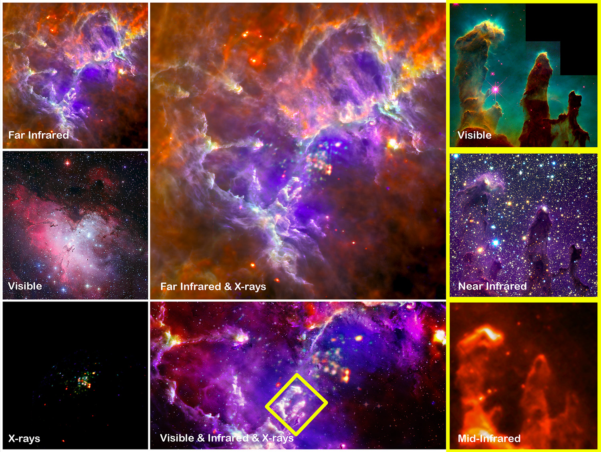
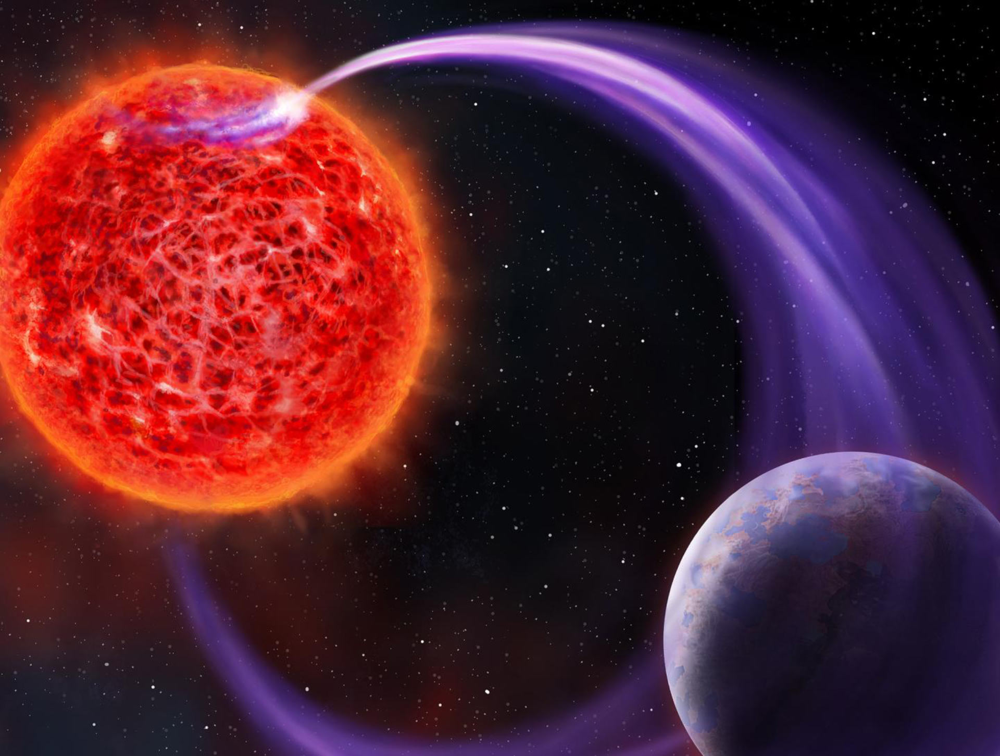
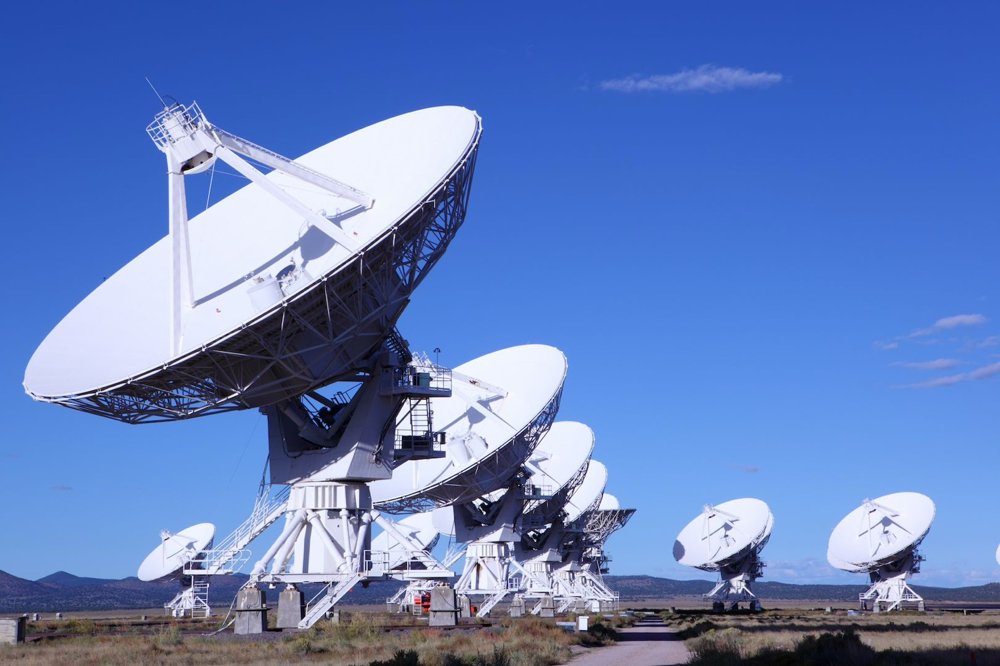
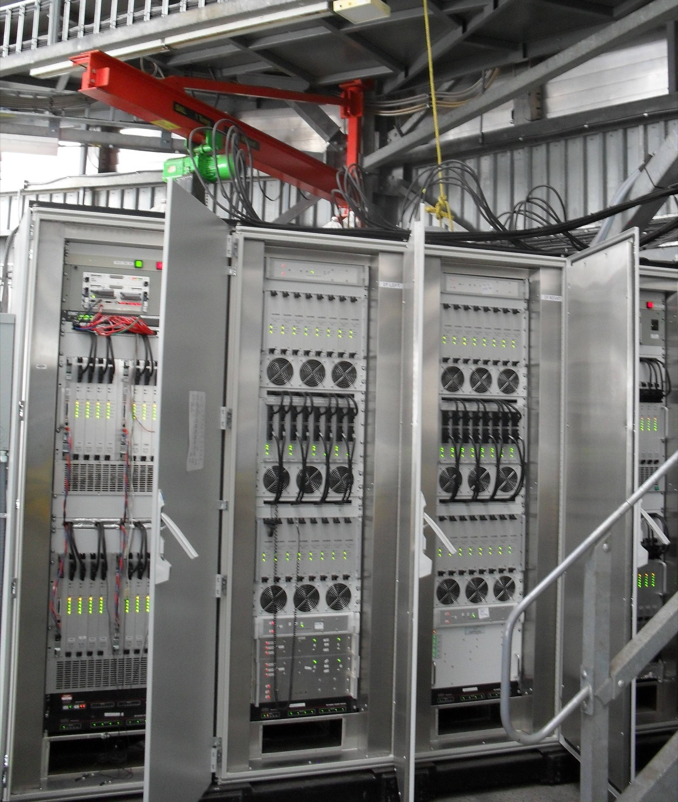
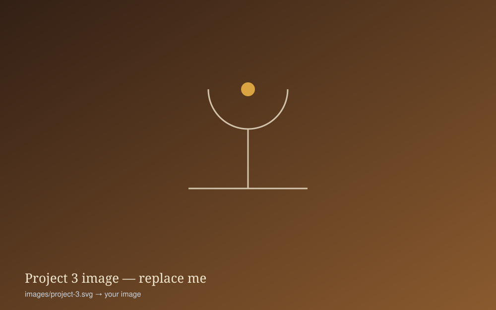

Research
My work runs from the chemistry of collapsing molecular clouds, through searches for planets around other stars, to the detectors and space instruments that make the observations possible.

Star formation and the interstellar medium
I work on millimetre, submillimetre and far-infrared molecular line and continuum studies of star-forming regions: spectral line surveys of the interstellar medium, mapping of molecular abundance variations linked to protostellar activity, and the study of shocked regions and the fragmentary structure of dense star-forming cloud cores.
I also work on photodissociation regions and ionisation fronts, triggered star formation, molecular outflow sources, debris disks and planet formation, and the Galactic Centre and Galactic plane at far-infrared and low radio frequencies.
Facilities: [e.g. JCMT, IRAM, APEX, Herschel, ALMA — edit to taste]

Exoplanets and stellar variability
I search for planets around other stars by the transit method, from the ground and from space — including a programme I lead that uses NASA’s two STEREO heliospheric observatories to hunt for exoplanet transits. High spectral resolution observations of exoplanet atmospheres extend this work toward characterisation, not just detection.
The same time-series data underpin my studies of stellar variability and asteroseismology — the oscillations and pulsations that reveal the interiors of stars.
Facilities: STEREO, [ground-based transit facilities, spectrographs]

Extragalactic surveys and the history of star formation
I carry out deep extragalactic survey observations at radio and far-infrared wavelengths, and study the molecular composition of galaxies, to trace the cosmic history of star formation. Low-frequency radio astronomy contributes to this programme and to my Galactic science more widely (see the LOFAR project on the projects page).
Facilities: LOFAR, AKARI, Herschel, [others]

Instrumentation and detector development
I run a long-standing instrumentation programme for space astronomy: cryogenic heterodyne detectors for millimetre, submillimetre and far-infrared instruments, hot-electron superconducting microbolometers, and millimetre-wave and low-frequency radio technology. This work underpins instruments for missions from Herschel and Planck to future far-infrared observatories (see projects).
Recently I have been extending these detector techniques to other domains, including the properties of intra-cellular water in biological systems, and applying AI methods across the programme.
Facilities: RAL Space cleanrooms and detector laboratories

Modelling, computation and AI
Modelling work spans radiative transfer calculations and numerical simulations of collapsing gas clouds — with full gas dynamics, applied to the collapse of dense molecular cores and the formation of stars. Gas is also modelled at the edges of photoionised nebulae and the shocks that can induce star formation, and the dynamics and chemistry within roughly ten light years of the Galactic Centre as a template for the nuclei of normal galaxies.
Artificial intelligence — including generative approaches and the development of AGI for astronomical analysis and discovery — is an increasingly active interest of mine.